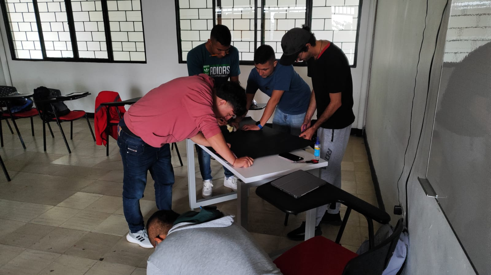

Yo soy Cristian, estudiante de TDSOFT, orgulloso de pertenecer a la Universidad del Valle y tener el privilegio de estar en este curso. Tengo 24 años.
Me graduaré de ingeniero en la Universidad del Quindío y sacaré a mi familia adelante, ayudándoles a cumplir sus sueños. Además, podré compartir tiempo con la persona adecuada para mi vida.

Napoleón fue un líder francés y gran estratega que llevó a su gente a grandes cambios en su cultura. Me identifico con la grandeza que él tuvo. Aprendí a conocerme más a fondo, a entender lo que mis compañeros pensaban de mí y cómo me veían. Mi compañero Brayan me comparaba con un control de PlayStation debido a mi gran habilidad para jugar videojuegos, mientras que yo lo describí como un agujero negro por su gran fuerza y capacidad para lograr sus metas sin importar los obstáculos que se interpongan en su camino.


Se desarrolló un test de 10 preguntas en el que nos puntuábamos para tener una idea aproximada de nuestras fortalezas y debilidades. Sin embargo, es importante destacar que no siempre cumplimos con las características que sugiere dicho test. Por ejemplo, tengo un buen autoconocimiento, poca empatía, comunicación asertiva normal con buenas relaciones interpersonales, tomo decisiones de manera normal y puedo resolver conflictos de manera adecuada. Además, tengo poco pensamiento creativo pero buen pensamiento crítico, manejo mis emociones y el estrés de manera efectiva.

Desarrollamos una silueta que nos representaría; en la mía, me gustaría pintarme con una capa al estilo de un superhéroe, inspirado por el gran liderazgo que me transmite Superman, mi película de superhéroes favorita. También consideré dibujarme como el personaje de 'Invencible', que es mi cómic de héroes preferido. Además de esto, diseñamos algunas preguntas para colocarlas en casa y decidir si plasmarlas en la silueta o en el cuaderno.


Aquí podemos ver la silueta acabada. La hice basada en un personaje de ficción llamado Invencible, que me gusta mucho. Él se puso el nombre de Invencible y, aunque a menudo está lastimado e incapaz de lograr las cosas, lo intenta todo el tiempo. Me gusta mucho dicho personaje y me inspiré en él porque me gustaría ser como él y lograr todo lo que se propone. Deberían ver la serie de Invencible para entenderme.
Ir a PreguntasAprendimos sobre las inteligencias y descubrimos en qué ámbitos podríamos ser mejores. Yo noté que tengo la inteligencia lógico-matemática, pero no suelo destacar en matemáticas; sin embargo, en lógica sí. En programación destaco un poco más, pero en matemáticas nada que ver. Y la que sí noté que no tengo es la kinestésica-corporal, pues en las puntuaciones fue en la que peor calificación saqué.
Fue una gran clase porque descubrimos habilidades de los compañeros que no conocíamos y expusimos en parejas sobre las inteligencias múltiples. Notamos qué carreras son buenas para el tipo de inteligencia que tiene cada uno.

Terminando la clase, hicimos una gran actividad bailando y notamos quiénes eran buenos bailando o tenían buena coordinación. También hubo una prueba de matemáticas en la que teníamos que hacer operaciones mientras nos movíamos hacia un lado. Hubo muchos que se equivocaron y fue una gran clase.
La enseñanza que nos dejó es que no todos destacamos en todo, pero tenemos habilidades que podemos explotar para lograr grandes logros o alcanzar cosas que no sabíamos que éramos capaces de lograr.
Empezamos la clase con la actividad de hemisferios dominantes y sacamos una puntuación al final. Al ver las puntuaciones, obtuve un puntaje de 5, lo que indica que soy equilibrado, aunque siento que mi hemisferio derecho, el lógico, domina más.
Al terminar la actividad de determinar cuál hemisferio era dominante, realizamos una actividad con bombas en la que debíamos evitar que se cayeran. Era necesario tener comunicación con todos y tener destreza motriz para poder movernos con las bombas entre todos. Fue divertida, ya que no podíamos hablar y entonces solo eran sonidos extraños que hacíamos o gestos.
Llegamos al salón y realizamos un compartir entre todos los compañeros y con el profesor para ver una película. Vimos 'Intensamente', para aprender sobre nuestras emociones. Al finalizar la clase, compartimos nuestras experiencias sobre qué emoción nos identificamos.

También la película nos sirvió para recordar nuestro pasado. Por ejemplo, al ver la película sentí mucha alegría. Uno recuerda momentos de la infancia o intenta discernir cuáles fueron los momentos importantes para la creación de las islas primordiales de cada uno de nosotros.
En esta clase compartimos lo aprendido de la clase anterior, que fue la película. Empezamos a dibujar las 5 emociones que más predominan entre nosotros. A continuación, adjunto un dibujo de la emoción que más domina en mí.

La alegría es la emoción que más predomina en mí. Maneja mi estado de ánimo y me llena de gran felicidad en mi vida. Esta emoción mantiene mi vida en el camino adecuado y hace que sea la persona que soy. Muchos amigos me identifican como un amigo alegre y con muchas cualidades para brindar en mi amistad.
En esta clase llegué un poquito tarde porque mi compañero Javier estaba con la moto pinchada, entonces fuimos a acompañarlo a despinchar la moto. Cuando se la despincharon, llegamos al salón y estaban viendo la película "Vidas de papel". Fue una película muy hermosa, que nos contaba la historia de alguien que al parecer pensaba que estaba cuidando a un niño cuando en realidad era como un trauma que él mismo se cuidaba, llegando al final a la muerte de él mismo. Una película muy linda que nos hace sentir muchas emociones. A mí me daba mucha alegría cuando lo veía contento con el niño porque me imaginaba a mí con mi hermanito haciendo cosas que lo hagan feliz a él. Muy buena película.

Empezamos la clase con una exposición sobre la empatía, donde nuestras compañeras hablaron de su importancia. Nos explicaron que la empatía nos sirve para comprender y entender a las demás personas. También nos dijeron que hay diferentes tipos de empatía (cognitiva, emocional, compasiva, situacional, global, reflexiva) y que se desarrolla desde que somos pequeños hasta la edad adulta.
Desarrollar una buena empatía nos permite mejorar las relaciones interpersonales, conectar con las demás personas y entender sus problemas o lo que están pasando. Fomenta la cooperación y el trabajo en equipo porque, en entornos laborales, la empatía facilita la cooperación y la solución de conflictos, ayudando a que los equipos se entiendan y se apoyen mutuamente. La empatía la usamos en la familia, el trabajo, la amistad y la comunidad.

Después hicimos una actividad de la exposición que fue un Kahoot sobre preguntas de la empatía. Perdí y ganó mi compañero Javier.
Luego hicimos una actividad con nuestro compañero sobre cómo me sentiría siendo mi compañero y qué me gustaría que me dijeran. Yo me emparejé con Brayan y dije que me siento fuerte, alegre, y dispuesto a todo. Me gustaría que me dijeran que voy a lograr todo, que voy a salir adelante y que voy a ser ingeniero.
Después recibimos una visita de una compañera del profesor que nos vino a hablar sobre la técnica del Pomodoro para fomentar la lectura en nosotros. Me di cuenta de que no me gusta leer, a pesar de que empezamos con lo más sencillo, que eran 25 minutos de lectura y 5 de descanso. Fue muy tedioso leer durante este tiempo, sentí que se hizo eterno. A mí me tocó una lectura sobre el amor, y por partes se veía buena y en otras no tanto, pero no fue suficiente. Tal vez debería practicar mucho más esta técnica, pero no me gusta leer.
Empezamos la clase con una actividad sobre qué nos gustaría ser si fuéramos un objeto. Fue aleatorio y a mí me tocó ser el dinero. Dije que me gustaría estar al servicio de la gente para poder cumplir sus sueños.
Seguido de esto, el compañero Mario y el compañero Frank expusieron sobre la comunicación asertiva, hablándonos sobre por qué es bueno tener una comunicación asertiva y llevarla de manera adecuada. Nos explicaron que las características de una comunicación asertiva pueden ser: claridad y directez, respeto mutuo y confianza en uno mismo. Esas son algunas características de una comunicación asertiva. Después hicimos una actividad sobre armar una figura con un compañero; él tenía las piezas y yo la forma de la figura, pero no podíamos vernos directamente, así que teníamos que solucionarlo solo con comunicación. Nos dimos cuenta de que es muy difícil llevar una comunicación asertiva de manera adecuada.

Este día me tocó exponer a mí y a mi compañero sobre la autoestima y por qué es importante. Hablamos de acuerdo a las diapositivas, poniendo ejemplos en casi todos los puntos y llevando un buen control a la hora de exponer. Con aportes del profesor cada cierto tiempo, me pareció que fue una buena exposición por parte de nosotros.
Hablamos de que es bueno tener autoestima porque nos permite afrontar retos y proponernos metas que no sabíamos que podíamos lograr. En caso de fallar, no dejar que nos baje demasiado la autoestima es crucial. Es una gran habilidad que desarrollamos a lo largo de la vida y nos sirve mucho en nuestra vida como personas.
Seguido de esto, hicimos una actividad sobre la autoestima que consistía en hacer un dibujo, fuera bueno o malo, que nos sirviera para la autoestima y nos hiciera sentir de manera positiva o negativa. Algunos compañeros hicieron dibujos positivos y otros negativos.
Después, hicimos una actividad sobre vendernos, ofreciéndonos a nosotros mismos como si fuera nuestra hoja de vida. Fue una forma de dar información sobre nosotros, con el profesor dándonos ideas de cómo mejorar nuestro discurso y presentarnos de manera correcta. Fue una gran clase.
Empezamos la clase con la exposición de las compañeras sobre la inclusión y aprendimos sobre los tipos de inclusión, que pueden ser social, ejecutiva, laboral y cultural. Aprendimos que cada individuo es valioso y único, aunque la palabra "individuo" suena fea para referirnos a las personas. Debemos tener características como variedad, inclusión, equidad, respeto, diálogo, comprensión y adaptabilidad.
Debemos aprender a querer y aceptar a todas las personas sin importar cómo sean y valorarlas tal cual son, sin discriminarlas.
Hicieron una actividad en Kahoot, la cual gané. Puse mucha atención y la gané, y me gané una chocolatina.
La siguiente exposición fue sobre la Resolución de Problemas. Nos hablaron de cómo lograr solucionarlos y por qué suceden. Pueden ser causados por falta de recursos, falta de comunicación, factores humanos y factores externos. Además, nos explicaron cómo atacar dichos problemas con soluciones para llegar a la meta que queramos.
La actividad fue una lluvia de ideas sobre cómo solucionar un problema planteado por los compañeros. Discutimos ideas y escogimos las mejores para afrontar el problema. Llegamos a una combinación de ideas para lograr tener la solución adecuada.
Esta semana no tuvimos clases, pero preparamos la actividad de la Universidad Libre de Humo. Nos reunimos en Sevilla nosotros los estudiantes para tomar ideas y empezar a hacer la actividad.
Pensamos que hacer una cartelera sobre una cajetilla de cigarrillos sería una buena idea y que la gente se pudiera tomar una foto. Hicimos ajustes a ella; al principio, la foto que la gente se iba a tomar debía ir arriba, pero terminamos haciendo un hueco en la cartelera para que la gente se tomara dicha foto ahí.
Llegó el momento de ir a la universidad y acomodar todo. Nos reunimos y subimos la cartelera en un tubo. A todo el que pasaba le ofrecíamos tomar una foto. Podemos ver al compañero Sebastián tomarse la foto ahí y otros compañeros también lo hicieron, pero las fotos las tiene el profesor.

Las chicas hicieron una gran actividad y un gran trabajo. Notamos cómo nos integramos, ya que en el salón somos de dos carreras distintas. A pesar de las diferencias, convivimos entre todos durante la actividad y se sintió como un salón unido ❤️